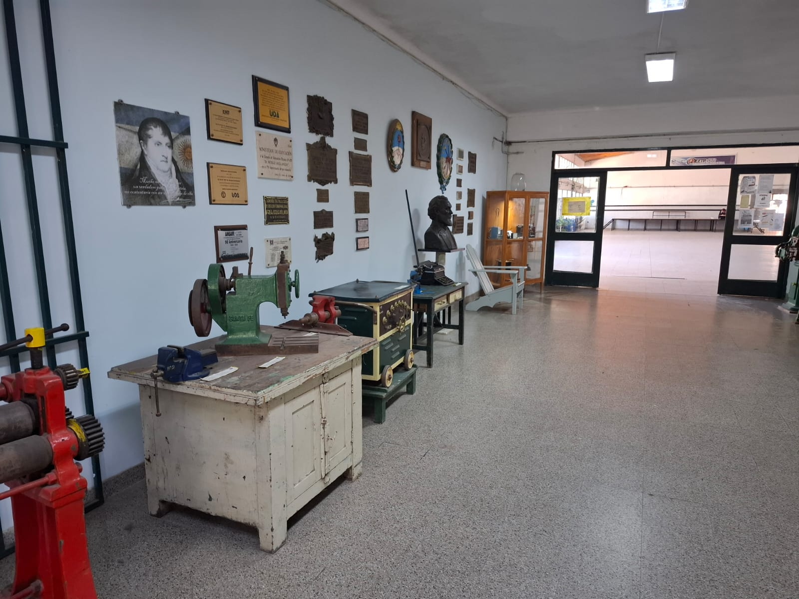
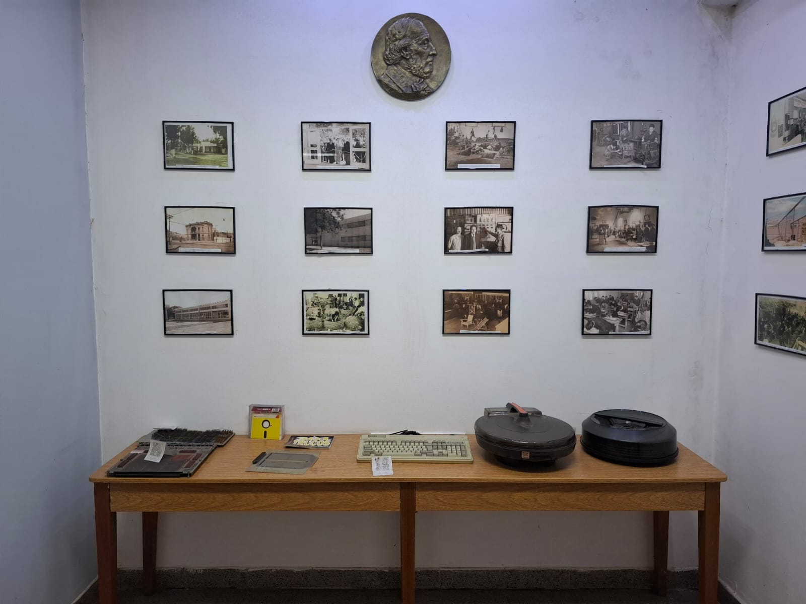

Bienvenidos al Museo Avellaneda
Descubre la riqueza cultural y la historia que el Museo Avellaneda tiene para ofrecer. Sumérgete en exposiciones únicas y colecciones que te conectan con el pasado y el presente.

Descubre nuestra rica historia
Descubre la riqueza cultural y la historia que el Museo Avellaneda tiene para ofrecer. Sumérgete en exposiciones únicas y colecciones que te conectan con el pasado y el presente.

Explora nuestras colecciones
Descubre la riqueza cultural y la historia que el Museo Avellaneda tiene para ofrecer. Sumérgete en exposiciones únicas y colecciones que te conectan con el pasado y el presente.


.jfif.jpg)